第7章
流体的运动，及其对抛体的阻力
命题32 定理26
设两个相似的物体系统由数目相同的粒子组成，一一对应的粒子相似而且成正比，位置相似，而相互间密度有给定比值；令它们各自在正比的时间内开始运动（即在一个系统内的粒子相互间运动，另一个系统内的粒子相互间运动）。如果同一系统内的粒子只在反射时相互接触；相互间既不吸引也不排斥，只受到反比于对应粒子的直径，正比于速度平方的加速力：则这两个系统中的粒子将在成正比的时间里维持各自之间的相似运动。
相似的物体在相似的位置，意味着将一个系统中的粒子与另一个系统中相对应的粒子作比较，当它们各自之间作相似运动时，在成正比的时间之末处于相似的位置上。因而时间是成正比的，其间相对应的粒子掠过相似轨迹的相似且成正比的部分。所以，如果设两个这样的系统，其对应粒子由于在开始时作相似的运动，则将维持这种相似的运动与另一个粒子相遇；因为如果它们不受到力的作用，由第一定律知，将沿直线做匀速运动。但如果它们相互间受到某种力的作用，而且这些力反比于对应粒子的直径正比于速度的平方，且因为这些粒子位置相似，受力成正比，则使对应粒子受到推动，且由所有作用力复合而成的总力（由运动定律推论Ⅱ）将有相似的方向，而且其作用效果与由各粒子相似的中心位置所发出的力相同；而且这些合力相互间的比等于复合成它们的各力的比，即，反比于对应粒子的直径，正比于速度的平方：所以将使对应粒子持续掠过该轨迹。如果这些中心是静止的，上述结论成立（由第一编命题4推论Ⅰ和Ⅷ）；但如果它们是运动的，由移动的相似性知，它们在系统粒子中的位置关系保持相似，使得粒子画出图形所引入的变化也保持相似。所以，对应于相似粒子的运动保持相似，直至它们第一次相遇；由此产生相似的碰撞和反弹；而这又导致粒子之间的相似运动（由于刚才说明的原因），直到它们再次相互碰撞。这个过程不断重复直至无限。
证毕。
推论Ⅰ．如果两个物体，它们与系统的对应部分相似且位置也相似，以类似的方式在它们之间按成正比的时间运动，它们的大小以及速度的比等于对应部分大小以及密度的比，则这些物体将在正比的时间内以类似方式维持运动；因为两个系统以及两个部分的多数情形是完全相同的。
推论Ⅱ．如果两个系统中所有相似的且位置相似的部分相互间静止；其中两个最大的分别在两个系统中保持对应，开始沿位置相似的直线以任意相似的方式运动，则它们将激发系统中其余部分的类似运动，并将在这些部分中以类似方式按正比时间维持运动；因而将掠过正比于其直径的距离。
命题33 定理27
在同样条件下，系统中较大的部分受到的阻力正比于其速度的平方、其直径的平方，以及系统中该部分的密度。
因为阻力部分来自系统各部分间相互作用的向心或离心力，部分来自各部分与较大部分间的碰撞与反弹。第一部分阻力相互间的比等于产生它们的总运动力的比，即等于总加速力与相应部分的物质的量的乘积的比；即（由命题），正比于速度的平方，反比于对应部分间的距离，正比于对应部分的物质的量：因而，由于一个系统中各部分间距比另一个系统各部分的间距，等于前一个系统的粒子或部分的直径比另一个系统的对应粒子或部分的直径，而且由于物质的量正比于各部分的密度与直径的立方，所以阻力相互间的比正比于速度的平方与直径的平方以及系统各部分的密度。
证毕。
后一种阻力正比于对应的反弹次数与反弹力的乘积；但反弹次数的比正比于对应部分的速度反比于反弹间距。而反弹力正比于速度与对应部分的大小和密度的乘积；即正比于速度与这些部分的直径立方以及密度的乘积。所以综合所有这些比值，对应部分阻力间的比正比于速度的平方与直径的平方以及各部密度的乘积。
证毕。
推论Ⅰ．所以，如果这些系统是两个弹性系统，与我们的空气相似，它们各部分间保持静止；而两个相似物质的大小与密度正比于流体的部分，被沿着位置相似的直线方向抛出；流体粒子相互作用的加速力反比于被抛出物质的直径，正比于其速度的平方；则二物体将在正比的时间内在流体中激起相似的运动，并将掠过相似的且正比于其直径的距离。
推论Ⅱ．在同一种流体中快速运动的抛体遇到的阻力近似正比于其速度的平方。因为如果远处的粒子相互作用的力随速度平方增大，则抛体受到的阻力精确正比于同一个比的平方；所以在一种介质中，如果其各部分处于相互间无作用的距离上，则阻力精确正比于速度平方。设有三种介质A，B，C，由相似相等且均匀分布于相等距离上的部分组成。令介质A和B的各部分相互分离，作用力正比于T和V；令介质C的部分间完全没有作用。如果四个相等的物体D，E，F，G运动进入介质中，前两个物体D和E进入前两种介质A和B，另两个物体F和G进入第三种介质C；如果物体D的速度比物体E的速度，以及物体F的速度比物体G的速度，等于力T与V的比值的平方根；则物体D的阻力比物体E的阻力，以及物体F的阻力比物体G的阻力，等于速度的平方相比；所以物体D的阻力比物体F的阻力等于物体E的阻力比物体G的阻力。令物体D与F速度相等，物体E与G速度也相等；以任意比率增加物体D和F的速度，按相同比率的平方减小介质B的粒子的力，则介质B将任意趋近介质C的形状和条件；所以相等的且速度相等的物体E和G在这些介质中的阻力将连续趋于相等，使得其间的差最终小于任意给定值。所以，由于物体D和F的阻力的比等于物体E和G的阻力的比，它们也将以相似的方式趋于相等的比值。所以，当物体D和F以极快速度运动时，受到的阻力极近于相等；因而由于物体F的阻力正比于速度的平方，特体D的阻力也近似正比于同一值。
推论Ⅲ．在弹性流体中运动极快的物体其阻力几乎与流体各部分间没有离心力因而不相互远离无异；只是这要求流体的弹性来自粒子的向心力，而物体的速度如此之大，不允许粒子有足够时间相互作用。
推论Ⅳ．在其相距较远的各部分无相互远离运动的介质中，由于相似且等速的物体的阻力正比于直径的平方，因而以极快的相等速度运动的物体，其在弹性介质中所受的阻力近似正比于直径的平方。
推论Ⅴ．由于相似、相等、等速的物体，在密度相同其粒子不相互远离的介质中，将在相等的时间内撞击等量的物质，不论组成介质的粒子是大是小，是多是少，因而对这些物质施加相等的运动量，反过来（由第三运动定律）又受到前者等量的反作用，即，受到相等的阻力；所以，也可以说，在密度相同的弹性流体中，当物体以极快的速度运动时，它们的阻力几乎相等，不论流体是由较大的或细微的部分所组成。因为速度极大的抛体，其阻力并不因为介质的细微而明显减小
推论Ⅵ．对于弹性力来自粒子的离心力的流体，上述结论均成立。但如果这种力来自某种其他原因，如来自粒子像羊毛球或树枝那样的膨胀，或任何其他原因，使得粒子相互间的自由运动受到阻碍，则由于介质的流体性变小，阻力比上述推论为大。
命题34 定理28
在由相等且自由分布于相等距离上的粒子所组成的稀薄介质中，直径相等的球或柱体沿柱体的轴以相等速度运动，则球的阻力仅为柱体阻力的一半。
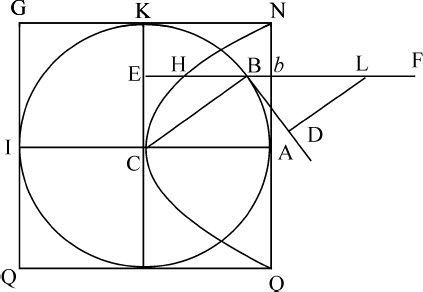
由于不论是物体在静止介质中运动，抑或介质粒子以相同速度撞击静止物体，介质对物体的作用都是相同的（由运动定律推论V），让我们假设物体是静止的，看看它受到运动介质的什么样的推力。令ABKI表示球体，球心为C，半径为CA，令介质粒子以给定速度沿平行于AC的直线方向作用于球体；令FB为这些直线中的一条在FB上取LB等于半径CB，作BD与球相切于B。在KC和BD上作垂线BE，LD；则一个介质粒子沿FB方向斜向地在B点撞击球体的力，比同一个粒子与柱体ONGQ（围绕球体的轴ACI画出）垂直相遇于b 的力，等于LD比LB，或BE比BC。又，该力沿其入射方向FB或AC推动球体的效率，比相同的力沿其确定方向，即沿直接撞冲球体的直线BC方向，推动球体的效率，等于BE比BC。连接这些比式，一个粒子沿直线FB方向斜向落在球体上推动该球沿其入射方向运动的效果，比同一粒子沿同一直线垂直落在柱体上推动它沿同一方向运动的效果，等于BE2 比BC2 。所以，如果在垂直于柱体NAO的圆底面且等于半径AC的b E上取b H等于
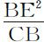
；则b H比b E等于粒子撞击球体的效果比它撞击柱体的效果。所以，由所有直线b H组成的立方体比由所有直线b E组成的立方体等于所有粒子作用于球体的效果比所有粒子作用于柱体的效果。但这些立方体中的前一个是抛物面的，其顶点在C，主轴为CA，通径为CA，而后一个立方体是一个与抛物面外切的柱体。所以，介质作用于球体的总力是它作用于柱体总力的一半。所以如果介质粒子是静止的，柱体和球体以相等速度运动，则球体的阻力为柱体阻力的一半。证毕。
附注
用同样方法可以比较其他形状物体的阻力；并可以求出最适于在有阻力介质中维持其运动的物体形状。如在以O为中心以OC为半径的圆形底面CEBH上，取高度OD，可以作一平截头圆锥体CBGF，它沿轴向向D方向运动所受到的阻力小于任何底面与高度均相同的平截头圆锥体；在Q二等分高度OD，延长OQ到S，使QS等于QC，则S为已求出的平截头锥体的顶点。
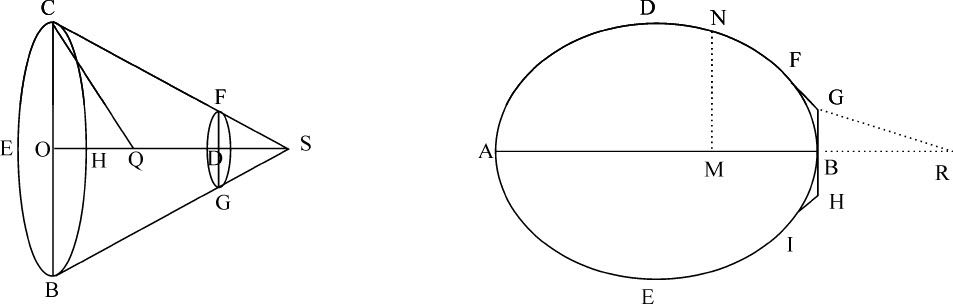
顺便指出，由于角CSB总是锐角，由上述可知，如果立方体ADBE是由椭圆或卵形线ADBE关于其轴AB旋转所成，而形成的图形又在点F，B和I与三条直线FG，GH，HI相切，使得GH在切点B与轴垂直，而FG，HI与GH的夹角FGB，BHI为135°：则由图形ADFGHIE关于同一个轴AB旋转所成的立方体，其阻力小于前述立方体，当二者都沿其轴AB方向运动，且以各自的极点B为前沿时。我认为本命题在造船中有用。
如果图形DNFG是这样的曲线，当由其上任意点N作垂线NM落于轴AB上，且由给定点G作直线GR平行于在N与该图形相切的直线，与轴延长线相交于R时，MN比GR等于GR3 比4BR·GB2 ，此图形关于其轴AB旋转所成的立方体，当在上述稀薄介质中由A向B运动时，所受到的阻力小于任何其他长度与宽度均相同的圆形立方体。
命题35 问题7
如果一种稀薄介质由极小的，静止的，大小相等且自由分布于相等距离处的粒子组成：求一球体在这种介质中匀速运动所受到的阻力。
情形1．设一有相同直径与高度的圆柱体沿其轴向在同一种介质中以相同速度运动；设介质的粒子落在球或柱体上以尽可能大的力反弹回来。由于球体的阻力（由前一命题）仅为柱体阻力的一半，而球体比柱体等于2比3，且柱体把垂直落于其上的粒子以最大的力反弹回来，传递给它们的速度是其身的二倍；可知柱体匀速运动掠过其轴长的一半时，传递给粒子的运动比柱体的总运动，等于介质密度比柱体密度；而球体在向前匀速运动掠过其直径长度时，传递给粒子相同的运动量；在它匀速掠过其直径的三分之二的时间内，它传递给粒子的运动比球体的总运动等于介质的密度比球体密度。所以，球遇到的阻力，与在它匀速通过其直径的三分之二的时间内使其全部运动被抵消或产生出来的力的比，等于介质的密度比球体的密度。
情形2．设介质粒子碰撞球体或柱体后并不反弹；则与粒子垂直碰撞的柱体把自己的速度直接传递给它们，因而遇到的阻力只有前一情形的一半，而球体遇到的阻力也只有其一半。
情形3．设介质粒子以某种既不是最大，也不为零的平均速度自球体反弹回来；则球的阻力为第一种情形的阻力与第二种情形的阻力的比例中项。
完毕。
推论Ⅰ．如球体与粒子都是无限坚硬的，而且完全没有弹性力，因而也没有反弹力，则球体的阻力比在该球在掠过其直径的三分之四的时间内使其全部运动被抵消或产生的力，等于介质的密度比球体密度。
推论Ⅱ．其他条件不变时，球体阻力正比于速度平方变化。
推论Ⅲ．其他条件不变时，球体阻力正比于直径平方变化。
推论Ⅳ．其他条件不变时，球体阻力正比于介质密度变化。
推论Ⅴ．球体阻力正比于速度平方，直径平方，以及介质密度三者的乘积。
推论Ⅵ．因此可以这样表示球体的运动及其阻力，令AB为时间，在其中球体由于均匀维持的阻力而失去全部运动，作AD，BC垂直于AB。令BC为全部运动，通过点C，以AD，AC为渐近线，作双曲线CF。延长AB到任意点E。作垂线EF与双曲线相交于F。作平行四边形CBEG，作AF交BC于H。如果球体在任意时间BE内，在无阻力介质中，以其初始运动BC均匀掠过由平行四边形表示的距离CBEG，则在有阻力介质中相同时间内掠过由双曲线面积表示的距离CBEF；在该时间末它的运动由双曲线的纵坐标EF表示，失去的运动部分为FG。在同一时间之末其阻力由长度BH表示，失去的阻力部分为CH。所有这些可以由第二编命题5推论Ⅰ和Ⅲ导出。
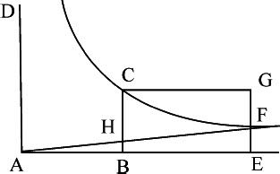
推论Ⅶ．如果在时间T内球体受均匀阻力R的作用失去其全部运动M，则相同的球体在时间t 内，在阻力R正比于速度平方减小的有阻力介质中失去其运动M的部分
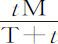
，而余下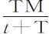
部分；所掠过的距离比它在相同时间t 内以均匀运动M所掠过的距离，等于数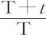
的对数乘以数2.302585092994，比数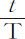
，因为双曲线面积BCFE比矩形BCGE也是该数值。附注
在本命题中，我已说明了在不连续介质中球形抛体的阻力及受阻滞情形，而且指出这种阻力，与在球体以均匀速度掠过其直径的三分之二长度的时间内能使球体总运动被抵消或产生的力的比等于介质密度比球体密度，条件是球体与介质粒子是完全弹性的，并受到最大反弹力的作用；当球体与介质粒子无限坚硬因而反弹力消失时，这种力减弱为一半。但在连续介质中，如水、热油、水银，球体在其中通过时并不直接与所有产生阻力的所有流体粒子相碰撞，而只是压迫邻近它的粒子，这些粒子压迫稍远的，它们再压迫其他粒子，如此等等；在这种介质中阻力又减小一半。在这些极富流动性的介质中，球体的阻力，与在它以均匀速度掠过其直径的
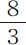
部分所用的时间内，使其全部运动被抵消或产生的力的比，等于介质的密度比球体的密度。我将在下面证明这一点。命题36 问题8
球自柱形桶底部孔洞中流出的水的运动。
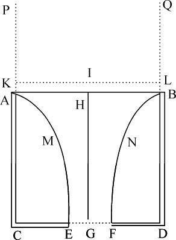
令ACDB为柱形容器，AB为其上端开口，CD为平行于地平面的底，EF为桶底中间的圆孔，G为圆孔中心，GH为垂直于地平面的桶轴。再设柱形冰块APQB体积与桶容积相等，并且是共轴的，以均匀运动连续下落，其各部分一旦与表面AB接触，即融化为水，受其重量驱使流入桶中，并且在下落中形成水柱ABNFEM，通过孔洞EF并刚好将它填满。令冰块均匀下落的速度和在圆AB内的连续水流速度等于水下落掠过距离IH所获得的速度；令IH与HG位于同一条直线上；通过点I作直线KL平行于地平线，与冰块的两侧边相交于K和L。则水自孔洞EF流出的速度与自I流过距离IG所获得的速度相等。所以，由伽利略定理，IG比IH等于水自孔洞流出速度，比水在圆AB的流速的平方，即，等于圆AB与圆EF比值的平方；这二个圆都反比于在相同时间里等量通过它们并完全把它们填满的水流速度。我们现在考虑的是水流向地平面的速度，不考虑与之平行使水流各部分相互趋近的运动；因为它既不是由重力产生的，也不改变重力引起的使水流向地平面的运动。我们的确要假定水的各部分有些微凝聚力，它使水在下落过程中以与地平面相平行的运动相互趋近以保持单一的水柱，防止它们分袭为几个水柱；但由这种凝聚力产生的平行于地平面的运动不在我们讨论之列。
情形1．设包围着水流ABNFEM的水桶总容积都充满了冰，水像流过漏斗那样自冰中穿过。如果水只是非常接近于冰，但不与之接触；或者等价地，如果冰面足够光滑，水虽然与它接触，却可以在其上自由滑移，完全不受到阻力；则水仍将像以前一样以相同速度自孔洞EF中穿过，而水柱ABNFEM的总重量仍是把水自孔洞挤出的动力，桶底则支撑着环绕该水柱的冰的重量。
现设桶中的冰融化为水；流出的水保持不变，因为其流速仍像从前一样不变。它之所以不变小，是因为融化了的冰也倾向于下落；它之所以不变大，是因为已成为水的冰不可能克服其他水的下落而独自上升。在流动的水中同样的力永远只应产生同样的速度。
但在位于桶底的孔洞，由于流水粒子有斜向运动，必使水流速度略大于从前。因为现在水的粒子不再全部垂直地通过该孔洞，而是自桶侧边的所有方向流下，向孔洞集聚，以斜向运动通过它；并且在聚集向孔洞时汇集成一股水流，其在孔洞下侧的直径略小于在孔洞处直径；它的直径与孔洞的直径的比等于5比6，或极近于
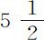
比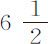
，如果我的测量正确的话。我制作了一块薄平板，在中间穿凿一个孔洞，圆洞直径约为1英寸的八分之五。为了不对流出的水加速使水流更细，我没有把这块平板固定在桶底，而是固定在桶边，使水沿平行于地平面的方向涌出。然后将桶注满水，放开孔洞使水流出；在距孔洞约半英寸处极精确地测得水流的直径为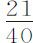
英寸。所以该圆洞的直径与水流的直径的比极近似地等于25比21。所以，水流径孔洞时自所有方面收缩，在流出水桶后该集聚作用使水流变得更小，这种变小使水流加速直到距孔洞半英寸处，在该距离处水流比孔洞处为小，而速度更大，其比值为25:25比21:21，或非常近似于17比12；即约为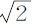
比1。现在，由此实验可以肯定，在给定的时间内，自桶底孔洞流出的水量等于在相同时间内以上述速度自另一个圆洞中自由流出的水量，后者与前者直径的比为21比25。所以，通过孔洞本身的水流的下落速度近似等于一重物自桶内静止水的一半高度落下所获得的速度。但水在流出后更受到集聚作用的加速，在它到达约为孔洞直径的距离处时，所获得的速度与另一个速度的比约为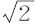
比1；一个重物差不多要从桶内静止水的全部高度处下落才能获得这一速度。所以，在以下的讨论中，水流的直径我们以称为EF的较小孔洞表示。设另一个平面NW在孔洞EF的上方，与孔平面平行，到孔洞的距离为同一孔洞的直径，并被凿出一个更大的洞ST，其大小刚好使流过下面孔洞EF的水把它填满。所以该孔洞的直径与下面孔洞直径的比约为25比21。通过这一方法，水将垂直流过下面的孔洞；而流出的水量取决于这最后一个孔洞的大小，将极近似地与本问题的解相同。可以把两个平面之间的空间与下落的水流看做是桶底。为了使解更简单和数学化，最好只取下平面为桶底，并假设水像通过漏斗那样自冰块中流过，经过下平面上的孔洞EF流出水桶，并连续地保持其运动，而冰块保持静止。所以在以下讨论中令ST为以Z为中心的圆洞直径，桶中的水全部自该孔洞流出。而令EF为另一个孔洞直径，水流过它时把它全部充满，不论流经它的水是自上面的孔洞ST来，还是像穿过漏斗那样自桶冰块中间而来。令上孔洞ST的直径比下孔洞EF的直径约为25比21，令两个孔洞所在平面之间距离等于小孔洞的直径EF。则自孔洞ST向下流过的水的速度，与一物体自高度IZ的一半下落到该孔洞时所获得的速度相同；而两种流经孔洞EF的水流速度，都等于一物体自整个高度IG自由下落所获得的速度。
情形2．如果孔洞EF不在桶底中间，而是在其他某处，则如果孔洞大小不变，水流出的速度与从前相同。因为虽然重物沿斜线下落到同样的高度比沿垂直线下落需要的时间要长，但在这两种情形中它所获得的下落速度相同；正如伽利略所证明的那样。
情形3．水自桶侧边孔洞流出的速度也相同。因为，如果孔洞很小，使得表面AB与KL之间的间隔可以忽略不计，而沿水平方向流出的水流形成一抛物线图形；由该抛物线的通径可以知道，水流的速度等于一物体自桶内静止水高度IG或HG下落所获得的速度。因为，我通过实验发现，如果孔洞以上静止水高度为20英寸，而孔洞高出一与地平面平行的平面也是20英寸，则由此孔洞喷出的水流落在此平面上的点，到孔洞平面的垂直距离极近似于37英寸。而没有阻力的水流应落在该平面上40英寸处，抛物线状水流的通径应为80英寸。
情形4．如果水流向上喷出，其速度也与上述相同。因为向上喷出的小股水流，以垂直运动上升到GH或GI，即桶中静止水的高度；它所受到的微小空气阻力在此忽略不计；所以它喷出的速度与它从该高度下落获得的速度相等。静止水的每个粒子在所有方面都受到相等的压力（由第二编命题19），并总是屈服于该压力，倾向于以相等的力向某处涌出，不论是通过桶底的孔洞下落，或是自桶侧边的孔洞沿水平方向喷出，或是导入管道自管道上侧的小孔涌出。这一结果不仅仅是从理论推导出来的，也是由上述著名实验所证明了的，水流出的速度与本命题中所导出的结果完全相同。
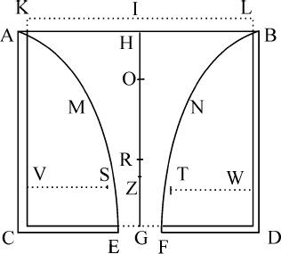
情形5．不论孔洞是圆形、方形、三角形，或其他任何形状，只要面积与圆形相等，水流的速度都相等；因为水流速度不决定于孔洞形状，只决定于孔洞在平面KL以下的深度。
情形6．如果桶ABCD的下部为静止水所淹没，且静止水在桶底以上的高度为GR，则在桶内的水自孔洞EF涌入静止水的速度等于水自高度IR落下所获得的速度；因为桶内所有低于静止水表面的水的重量都受到静止水的重量的支撑而平衡，因而对桶内水的下落运动无加速作用。该情形通过实验测定水流出的时间也可以得到证明。
推论Ⅰ．因此，如果水的深度CA延长到K，使AK比CK等于桶底任意位置上的孔洞的面积与圆AB的面积的比的平方，则水流速度将等于水自高度KC自由落下所获得的速度。
推论Ⅱ．使水流的全部运动得以产生的力等于一个圆形水柱的重量，其底为孔洞EF，高度为2GI或2CK。因为在水流等于该水柱时，它由其自身重量自高度GI落下所获得的速度等于它流出的速度。
推论Ⅲ．在桶ABDC中所有水的重量比其中驱使水流出的部分的重量，等于圆AB与EF的和比圆EF的二倍。因为令IO为IH与IG的比例中项，则自孔洞EF流出的水，在水滴自I下落掠过高度IG的时间内，等于以圆EF为底，2IG为其高的柱体，即，等于以AB为底，2IO为高的柱体。因为圆EF比圆AB等于高度IH比高度IG的平方根；即等于比例中项IO比IG。而且，在水滴自I下落掠过高度IH的时间内，流出的水等于以圆AB为底，2IH为高的柱体；在水滴自I下落经过H到G掠过高度差HG的时间内，流出的水，即立方体ABNFEM内所包含的水，等于柱体的差，即等于以AB为底，2HO为高的柱体。所以，桶ABDC中所有的水比装在上述立方体ABNFEM中的下落的水，等于HG比2HO，即，等于HO＋OG比2HO，或者IH＋IO比2IH。但装在立方体ABGNFEM中的所有水的重量都用于把水逐出水桶；因而桶中所有水的重量比该部分使水外流的重量等于IH＋IO比2IH，所以等于圆EF与AB的和比圆EF的2倍。
推论Ⅳ．桶ABDC中所有水的重量比另一部分由桶底支撑着的水的重量，等于圆AB与EF的和比这二者的差。
推论Ⅴ．该桶底支撑着的部分的重量比用于使水流出的重量等于圆AB与EF的差比小圆EF，或等于桶底面积比孔洞的二倍。
推论Ⅵ．重量中压迫桶底的部分比垂直压迫的总重量等于圆AB比圆AB与EF的和，或等于圆AB比圆AB的二倍减去桶底面积的差。因重量中压迫桶底的部分比桶中水的总重量等于圆AB与EF的差比这二者的和（由推论Ⅳ）；而桶中水总重量比垂直压迫桶底的水总重量等于圆AB比圆AB与EF的差。所以，将二比例式中对应项相乘，压迫桶底的重量部分比垂直压迫桶底的所有水的重量等于圆AB比圆AB与EF的和，或比圆AB的二倍减桶底的差。
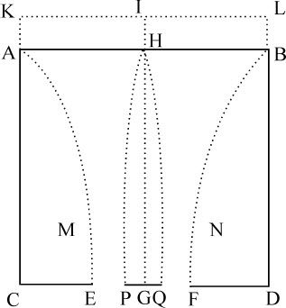
推论Ⅶ．如果在孔洞EF的中间置一小圆片PQ，它也以G为圆心，平行于地平面，则该小圆片支撑的水的重量大于以该小圆片为底，高为GH的水柱重量的三分之一。因为仍令ABNFEM为下落的水柱，其轴为GH，令所有对该水柱顺利而迅速地下落无影响的水都冻结，包括水柱周围的与小圆片之上的。令PHQ为小圆片之上冻结的水柱，其顶点为H，高为GH。设这样的水柱因其自身重量而下落。且既不依附也不压迫PHQ，而是完全没有摩擦地与之自由滑动，除在开始下落时紧挨着冰柱顶点的水柱或许会发生凹形。由于围绕着下落水柱的冻结水AMEC，BNFD，其内表面AME，BNF向着该下落水柱弯曲，因而大于以小圆片PQ为底，高GH的圆锥体；即，大于底与高与相同的柱体的三分之一。所以，小圆片所支撑的水柱的重量，大于该圆锥的重量，既大于柱体的三分之一。
推论Ⅷ．当圆PQ很小时，它所支撑的水的重量似乎小于以该圆为底，高为HG的水柱重量的三分之二。因为，在上述诸条件下，设以该小圆片为底的半椭球体，其半轴或高为HG。该图形等于柱体的三分之二，被包含在冻结水柱PHQ之内，其重量为小圆片所支撑。因为水的运动虽然是直接向下的，而该柱的外表面必定与底PQ以某种锐角相交，水在其下落中被连续加速，这种加速使水流变细。所以，由于该角小于直角，该水柱的下部将位于半椭球之内。其上部则为一锐角或集于一点；因为水流是自上而下的，水在顶点的水平运动必定无限大于它流向地平面的运动。而且该圆PQ越小，柱体的顶部越尖锐；由于圆片无限缩小时，角PHQ也无限缩小，因而柱体位于半椭球之内。所以柱体小于半椭球，或小于以该小圆片为底，高为GH的柱体的三分之二部分。所以小圆片支撑的水力等于该柱体的重量，而周围的水则被用以驱使水流出孔洞。
推论Ⅸ．（就我所知）小圆片所支撑的重量比以该小圆片为底，高为
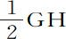
的水柱重量，等于EF2 比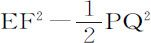
，或非常接近等于圆EF比该圆减去小圆片PQ的一半的差。引理4
如果一个圆柱体沿其长度方向匀速运动，它所受到的阻力完全不因为其长度的增加或减少而改变；因而它的阻力等于一个直径相同，沿垂直于圆面方向匀速运动的圆的阻力。
因为柱体的边根本不向着运动方向；当其长度无限缩小为零时即变为圆。
命题37 定理29
如果一圆柱体沿其长度方向在被压缩的、无限的和非弹性的流体中匀速运动，则其横截面所引起的阻力比在其运动过四倍长度的时间内使其全部运动被抵消或产生的力，近似等于介质的密度比柱体密度。
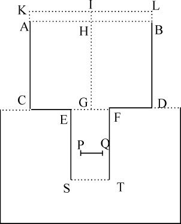
令桶ABDC以其底CD与静止水面接触，水自桶内通过垂直于地平面的柱形管道EFTS流入静止水；令小圆片PQ与地平面平行地置于管道中间任意处；延长CA到K，使AK比CK等于管道EF的孔洞减去小圆片PQ的差比圆AB的平方。则（由命题36情形5，情形6和推论Ⅰ）水通过小圆片与桶之间的环形空间的流动速度与水下落掠过高度KC或IC所获得的速度完全相同。
（由命题36推论Ⅹ）如果桶的宽度是无限的，使得短线段HI消失，高度IG，HG相等；则流下的水压迫小圆片的力比以该小圆片为底，高为
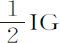
的水柱的重量，非常接近等于EF2 比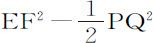
。因为通过整个管道均匀流下的水对小圆片PQ的压力无论它置于管道内何处都是一样的。现设管道口EF，ST关闭，令小圆片在被自所有方向压缩的流体中上升，并在上升时推挤其上方的水通过小圆片与管道壁之间的空间向下流动。则小圆片上升的速度比流下的水的速度，等于圆EF与PQ的差比圆PQ；而小圆片上升的速度比这两个速度的和，即比向下流经上升小圆片的水的相对速度，等于圆EF与PQ的差比圆EF，或等于EF2 －PQ2 比EF2 。令该相对速度等于小圆片不动时使上述水通过环形空间的速度，即等于水下落掠过高度IG所获得的速度；则水力对该上升小圆片的作用与以前相同（由运动定律推论Ⅴ）；即，上升小圆片的阻力比以该小圆片为底，高为
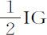
的水柱的重量，近似等于EF2 比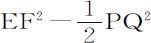
。而该小圆片的速度比水下落掠过高度IG所获得的速度，等于EF2 －PQ2 比EF2 。令管道宽度无限增大；则EF2 －PQ2 与EF2 ，以及EF2 与
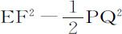
之间的比最后变为等量的比。所以这时小圆片的速度等于水下落掠过高度IG所获得的速度；其阻力则等于以该小圆片为底，高为IG的一半的水柱重量，该水柱自此高度下落必能获得小圆片上升的速度；且在此下落时间内，水柱可以此速度运动过其四倍的距离。而以此速度沿其长度方向运动的柱体的阻力与小圆片的阻力相同（由引理4），因而近似等于在它掠过四倍长度时产生其运动的力。如果柱体长度增加或减少，则其运动，以及掠过其四倍长度所用的时间，也按相同比例增加或减小；因而使如此增加或减小的运动得以抵消或产生的力保持不变；因为时间也按相同比例增加或减少了；所以该力仍等于柱体的阻力，因为（由引理4）该阻力也保持不变。
如果柱体的密度增加或减小，其运动，以及使其运动得以在相同时间内产生或抵消的力，也按相同比例增加或减小。因而任意柱体的阻力比该柱体在运动过其四倍长度的时间内使其全部运动得以产生或抵消的力，近似等于介质密度比柱体密度。
证毕。
流体必须是因压缩而连续的；之所以要求它连续和非弹性，是因为压缩产生的压力可以即时传播；而作用于运动物体上的相等的力不会引起阻力的变化。由物体运动所产生的压力在产生流体各部分的运动中被消耗掉，由此产生阻力，但由流体的压缩而产生的压力，不论它多么大，只要它是即时传播的，就不产生流体的局部运动，不会对在其中的运动产生任何改变；因而它既不增加也不减小阻力。这可以由本命题的讨论得到证明，压缩产生的流体作用不会使在其中运动物体的后部压力大于前部，因而不会使阻力减小。如果压缩力的传播无限快于受压物体的运动，则前部的压缩力不会大于后部的压缩力。而如果流体是连续和非弹性的，则压缩作用可以得到无限快的即时传播。
推论Ⅰ．在连续的无限介质中沿其长度方向匀速运动的柱体，其阻力正比于速度平方、直径平方，以及介质密度的乘积。
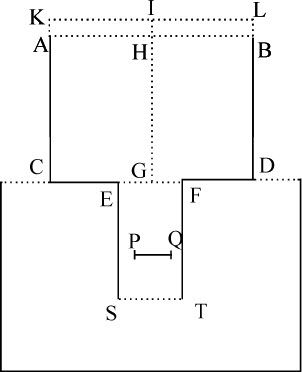
推论Ⅱ．如果管道的宽度不无限增加，柱体沿其长度方向在管道内的静止介质中运动，其轴总是与管道轴重合，则其阻力比在它运动过其四倍长度的时间内能使其全部运动产生或被抵消的力，等于EF2
比 ，乘以EF2
比EF2
－PQ2
的平方，再乘以介质密度比柱体密度。
，乘以EF2
比EF2
－PQ2
的平方，再乘以介质密度比柱体密度。
推论Ⅲ．相同条件下，长度L比柱体四倍长度等于
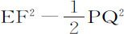
比EF2 乘以EF2 －PQ2 比EF2 的平方：则柱体阻力比柱体运动过长度L时间内使其全部运动得以产生或抵消的力，等于介质密度比柱体密度。附注
在本命题中，我们只讨论了由柱体横截面引起的阻力，而忽略了由斜向运动所产生的阻力。因为，与命题36情形1一样，斜向运动使桶中的水自所有方向向孔洞EF集聚，对水自该孔洞流出有阻碍作用，在本命题中，水的各部分受到水柱前端的压力，斜向运动屈服于这种压力，向所有方向扩散，阻碍水通过水柱前端附近流向后部，迫使流体从较远处流过；它使阻力的增加，大致等于它使水流出水桶的减少，即，近似等于25比21的平方。仍与前述命题情形1一样，我们今桶中所有围绕着水柱的水都冻结，使水的各部分能垂直而从容地通过孔洞EF，而其斜向运动与无用部分都没有运动，在本命题中，则设水的各部分能尽可能直接而迅速地屈服于斜向运动并做出反应，使斜向运动得以消除，水的各部分可以自由穿过水柱，只有其横截面能够产生阻力，因为不能使柱体前端变尖，除非使其直径变小；所以必须假设作斜向和无用运动并产生阻力的流体部分，在柱体两端保持相互静止和连续，并与柱体连接在一起。令ABCD为一矩形，AE和BE为二段抛物线弧，其轴为AB，其通径与柱体下落以获得运动速度所掠过的空间HG的比，等于HG比
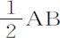
。令DF与CF为另两段关于轴CD的抛物线弧，其通径为前者的四倍；将这样的图形关于轴EF旋转得到一个立方体，其中部ABDC是我们刚讨论过的圆柱体，其两端部分ABE和CDF则包含着相互静止的流体部分，并固化为两个坚硬物体与圆柱体的两端粘接在一起形成一头一尾。如果这样的立方体EACFDB沿其轴长FE方向向着E的方向运动，则其阻力近似等于我们在本命题中所讨论的情形；即，阻力与在它匀速运动过长度4AC的时间内能使柱体的全部运动被抵消或产生的力的比，近似等于流体密度比柱体密度。而且（由命题36推论Ⅶ）该阻力与该力的比至少为2比3。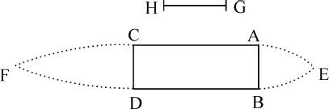
引理5
如果先后将宽度相等的圆柱体、球体和椭球体放入柱形管道中间，并使它们的轴与管道轴重合，则这些物体对流过管道的水的阻碍作用相等。
因为介于管道壁与圆柱体、球体和椭球体之间使水能通过的空间是相等的；而自相等空间流过的水相等。
如在命题36推论Ⅶ中已解释过的那样，本引理的条件是，所有位于圆柱体、球体，或椭球体上方的水，其流动性对于水尽可能快地通过该空间不是必要的，都被冻结起来。
引理6
在相同条件下，上述物体受到流经管道的水的作用是相等的。
这可以由引理5和第三定律证明。因为水与物体间的相互作用是相等的。
引理7
如果管道中的水是静止的，这些物体以相等速度沿相反方向在管道中运动，则它们相互间的阻力是相等的。
这可以由前一引理得到证明，因为它们之间的相对运动保持不变。
附注
所有凸起的圆形物体，其轴与管道轴相重合，都与此情形相同。或大或小的摩擦会产生某些差别；但我们在这些引理中假设物体是十分光滑的，而介质的黏性与摩擦为零；能够以其斜向和多余运动干扰、阻碍水流过管道的流体部分，像冻结的水那样被固定起来，并以前一命题的附注中所解释的方式与物体的力和后部相粘连，相互间保持静止；因为在后面我们要讨论横截面极大的圆形物体所可能遇到的极小阻力问题。
浮在流体上的物体作直线运动时，会使流体将其前部抬起，而将其后部下沉，钝形物体尤其如此；因而它们遇到阻力略大于头尾都是尖形的物体。在弹性流体中运动的物体，如果其前后均为钝形，在其前部聚集起稍多的流体，而在其后部则使之稍稀薄；因而它所遇到的阻力也略大于头尾都是尖形的物体。但在这些引理和命题中，我们不讨论弹性流体，而只讨论非弹性流体；不讨论漂浮在流体表面的物体，而讨论深浸于其中的物体。一旦知道了在非弹性流体中物体的阻力，即可以在像空气那样的弹性流体中，以及在像湖泊和海洋那样的静止流体表面上，略为增加一些阻力。
命题38 定理30
如果一个球体在压缩了的无限的非弹性流体中匀速运动，则其阻力比在它掠过其直径的三分之八长度的时间内使其全部运动被抵消或产生的力，极近似地等于流体的密度比该球体的密度。
因为球体比其外接圆柱体等于2比3；因而在柱体掠过其直径四倍长度的时间内使同一柱体全部运动被抵消的力，可以在球体掠过其直径三分之二，即，其直径的三分之八长度的时间内，抵消球体的全部运动。现在，柱体的阻力比这个力极近似地等于流体的密度比柱体或球体的密度（由命题37），而球体阻力等于柱体的阻力（由引理5，6，7）。
证毕。
推论Ⅰ．在压缩了的无限介质中，球体阻力正比于速度平方、直径平方与介质密度的乘积。
推论Ⅱ．球体以其相对重量在有阻力介质中下落所能获得的最大速度，与相同重量的球体在无阻力介质中下落时所获得的速度相等，掠过的距离比其直径的三分之四等于球密度比介质密度。因为球体以其下落所获得的速度运动时，掠过的距离比其直径的三分之八等于球密度比流体密度；而它的产生这一运动的重力比在球以相同速度掠过其直径的三分之八的时间内，产生同样运动的力，等于流体密度比球体密度；因而（由本命题）重力等于阻力，不能使球加速。
推论Ⅲ．如果给定球的密度和它开始运动时的速度，以及球在其中运动的静止压缩流体的密度，则可以求出任意时间球体的阻力和速度，以及它所掠过的空间（命题35，推论Ⅶ）。
推论Ⅳ．球在压缩了的静止的且密度与它自身相同的流体中运动时，在掠过其二倍直径的长度之前已失去其运动的一半（也由推论Ⅶ）。
命题39 定理31
如果一球体在密封于管道中的压缩流体中运动，其阻力比在它掠过直径的三分之八长度的时间内使其全部运动被抵消或产生的力，近似等于管口面积比管口减去球大圆一半的差；与管口面积比管口减去球大圆的差；以及流体密度比球体密度的乘积。
这可以由命题37推论Ⅱ，以及与前一命题相同的方法得到证明。
附注
在以上两个命题中，我们假设（与以前在引理5中一样）所有在球之前的、其流动性能使阻力作同样增加的水都已冻结。这样，如果这些水变为流体，它将多少会使阻力增加。但在这些命题中这种增加如此之小，可以忽略不计，因为球体的凸面与水的冻结所产生的效果几乎完全相同。
命题40 问题9
由实验求出一球体在具有理想的流动性和压缩了的介质中运动的阻力。
令A为球体在真空中的重量，B为在有阻力介质中的重量，D为球体直径，F为某一距离，它比
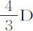
等于球体密度比介质密度，即等于A比A－B，G为球以重量B在无阻力介质中下落掠过距离F所用的时间，而H为该下落所获得的速度。则由命题38推论Ⅱ，H为球体以重量B在有阻力介质中所能获得的最大下落速度；而当球体以该速度下落时，它遇到的阻力等于其重量B；由命题38推论Ⅰ可知，以其他任意速度运动时的阻力比重量B等于该速度与最大速度H的比的平方。这正是流体物质的惰性所产生的阻力。由其弹性、黏性和摩擦所产生的阻力，可以由以下方法求出。
令球体在流体中以其重量B下落；P表示下落时间，以秒为单位，如果G是以秒给定的话。求出对应于
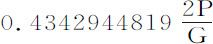
的对数的绝对数N，令L为数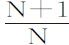
的对数；则下落所获得的速度为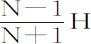
，所掠过的高度为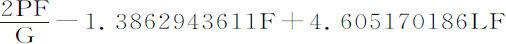
。如果流体有足够深度，可以略去4.605170186LF项；而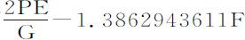
为掠过的近似高度。这些公式可以由第二编命题9及其推论推出，其前提是球体所遇到的阻力仅来自物质的惰性。如果它确实遇到了其他任何类型的阻力，则下落将变慢，并可由变慢时间量求出这种新的阻力的量。为便于求得在流体中物体下落的速度，我制成了如下表格，其第一列表示下落时间；第二列表示下落所获得的速度，最大速度为100,000,000；第三列表示在这些时间内下落掠过的距离，2F为物体在时间G内以最大速度掠过的距离；第四列表示在相同时间里以最大速度掠过的距离。第四列中的数为
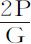
，由此减去数1.3862944－4.6051702L，即得到第三列数；要得到下落掠过的距离必须将这些数乘以距离F。此处加上第五列数值，表示物体以其相对重量的力B在真空中相同时间内下落所掠过的距离。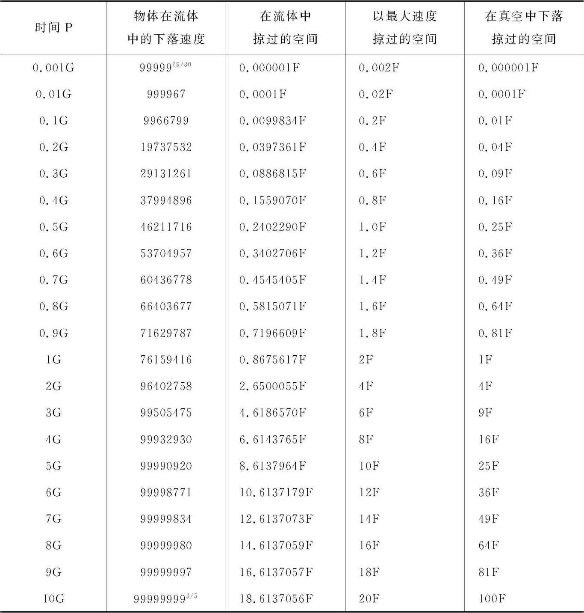
附注
为由实验求出阻力，我制作了一个方形木桶，其内侧长和宽均为9英寸，深
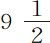
英尺，盛满雨水；又制备了一些包含有铅的蜡球，我记录了这些球下落的时间，下落高度为112英寸。1立方英尺雨水重76镑；1立方英寸雨水重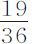
盎司，或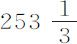
谷；直径1英寸的水球在空气中重132.645谷，在真空中重132.8谷；其他任意球体的重量正比于它在真空中的重量超出其在水中重量的部分。实验1．一个在空气中重
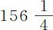
谷的球，在水中重77谷，在4秒钟内掠过全部112英寸高度。经多次重复这一实验，该球总是需用完全相同的4秒钟。该球在真空中重
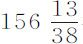
谷；该重量超出其在水中的重量部分为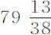
谷。因此球的直径为0.84224英寸。水的密度比该球的密度，等于该出超部分比球在真空中的重量；而球直径的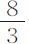
部分（即2.24597英寸）比距离2F也等于该值，所以2F应为4.4256英寸。现在，该球在真空中以其全部重量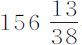
谷向下落，一秒钟内掠过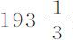
英寸；而在无阻力的水中以其重量77谷在相同时间内掠过95.219英寸；它在掠过2.2128英寸的G时刻获得它在水中下落所可能达到的最大速度H，而时间G比一秒钟等于距离F2.2128英寸与95.219英寸之比的平方根。所以时间G为0.15244秒。而且，在该时间G内，球以该最大速度H可掠过距离2F，即4.4256英寸；所以球4秒钟内将掠过116.1245英寸的距离。减去距离1.3862944·F，或3.0676英寸，则余下113.0569英寸的距离，这就是球在盛于极宽容器中的水里下落4秒钟所掠过的距离。但由于上述木桶较窄，该距离应按一比值减小，该比值为桶口比它超出球大圆的一半的差值的平方根，乘以桶口比它超出球大圆的差值，即等于1比0.9914。求出该值，即得到112.08英寸距离，它是球在盛于该木桶中的水里下落4秒钟所应掠过的距离，应与理论计算接近，但实验给出的是112英寸。实验2．三个相等的球，在空气和水中的重量分别为
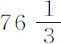
谷和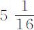
谷，令它们先后下落；在水中每个球都用15秒钟下落掠过112英寸高度。通过计算．每个球在真空中重
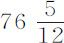
谷；该重量超出其在水中重量部分为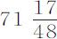
谷；球直径为0.81296英寸；该直径的 部分为2.16789英寸；距离2F为2.3217英寸；在无阻力水中，重 谷的球一秒钟内掠过的距离为12.808英寸，求出时间G为0.301056秒。所以，一个球体以其 谷的重量在水中下落所能获得的最大速度，在时间0.301056秒内掠过距离2.3217英寸；在15秒内掠过115.678英寸。减去距离1.3862944F，或1.609英寸，余下距离114.069英寸；所以这就是当桶很宽时球在相同时间内所应掠过的距离。但由于桶较窄，该距离应减去0.895英寸。所以该距离余下113.174英寸，这就是球在这个桶中15秒钟内所应下落的近似距离。而实验值是112英寸。差别不大。实验3．三个相等的球，在空气和水中分别重121谷和1谷，令其先后下落；它们分别在46秒、47秒和50秒内通过112英寸的距离。
由理论计算，这些球应在约40秒内完成下落。但它们下落得较慢，其原因究竟是在较慢的运动中惰性力产生的阻力在其他原因产生的阻力中所占比例较小；或是由于小水泡妨碍球的运动；或是由于天气或放之下沉的手较温暖而使蜡稀疏；或者，还是因为在水中称量球体重量有未察觉的误差，我尚不能肯定。所以，球在水中重量应有若干谷，这时实验才有明确而可靠的结果。
实验4．我是在得到前述几个命题中的理论之前开始上述流体阻力的实验研究的。其后，为了对所发现的理论加以检验，我又制作了一个木桶，其内侧宽 英寸，深 英尺。然后又制作了四个包含着铅的蜡球，每一个在空气中重量都是 谷，在水中重 谷。把它们放入水中，并用一只半秒摆测定下落时间。球是冷却的，并在称量和放入水中之前已冷却多时；因为温暖会使蜡稀疏，进入减少球在水中的重量；而变得稀疏的蜡不会因为冷却而立即恢复其原先的密度。在放之下落之前，先把它们都没入水中，以免其某一部分露出水面而在开始下落时产生加速。当它们投入水中并完全静止后，极为小心地放手令其下落，以免受到手的任何冲击。它们先后以 和51次摆动的时间下落掠过15英尺又2英寸的高度。但实验时的天气比称量时略寒冷，所以我后来又重做了一次；这一次的下落时间分别是 和53次；第三次实验的时间是 和53次摆动。经过几次实验，我认为下落时间以 和50次摆动最常出现。下落较慢的情况，可能是由于碰到桶壁而受阻造成的。
现在按我们的理论来计算。球在真空中重 谷；该重量超出其在水的重量 谷；球直径为0.99868英寸；该直径的 部分为2.66315英寸；距离2F为2.8066英寸；重 谷的球在无阻力的水中一秒钟可以掠过9.88164英寸；时间G为0.376843秒。所以，球在其重量 谷的力作用下，以其在水中下落所能获得的最大速度运动，在0.376843秒内可以掠过2.8066英寸长的距离，一秒内可以掠过7.44766英寸。
25秒或50次摆动内，距离为186.1915英寸。减去距离1.386294F，或1.9454英寸，余下距离184.2461英寸，这便是该球体在该时间内在极大的桶中所下落的距离。因为我们的桶较窄，令该空间按桶口比该桶口超出球大圆的一半的平方，乘以桶口比桶口超出球大圆的比值缩小；即得到距离181.86英寸，这就是根据我们的理论，球应在50次摆动时间内在桶中下落的近似距离。而实验结果是，在 或50次摆动内，掠过距离182英寸。
实验5．四个球在空气中重 ，水中重 谷，下落时间为 和30次，有几次是31，32和33次摆动，掠过的高度为15英尺2英寸。
按理论计算它们的下落时间应为大约29次摆动。
实验6．五个球，在空气中重 谷，水中重 谷，几次下落时间为 ，16，17和18次摆动，掠过高度为15英尺2英寸。
按理论计算它们的下落时间应为大约15次。
实验7．四个球，在空气中重 谷，水中重 谷，几个下落时间为 和33次摆动，掠过高度为15英尺 英寸。
按理论计算，它们的下落时间应为约28次摆动。
这些球重量相同，下落距离相同，但速度却有快有慢，我认为原因如下：当球被释放并开始下落时，会绕其中心摆动，较重的一侧最先下落，并产生一个摆动运动。较之完全没有摆动的下沉，球通过其摆动传递给水较多的运动；而这种传递使球自身失去部分下落运动；因而随着这种摆动的或强或弱，下落中受到的阻碍也就或大或小。此外，球总是偏离其向下摆动的一侧，这种偏离又使它靠近桶壁，甚至有时与之发生碰撞。球越重，这种摆动越剧烈；球越大，它对水的推力越大。所以，为了减小球的这种摆动，我又制作了新的铅和蜡球，把铅封在极靠近球表面的一侧；并且用这样的方式加以释放，在开始下落时尽可能使其较重的一侧处于最低点。这一措施使摆动比以前大为减小，球的下落时间不再如此参差不齐：如下列实验所示。
实验8．四个球在空气中重139谷，水中重 谷，令其下落数次，大多数时间都是51次摆动，再也没有超过52次或少于50次，掠过高度为182英寸。
按理论计算，它们的下落时间应为52次。
实验9．四只球在空气中重 谷，水中重 谷，几次下落时间从未少于12次摆动，也从未超过13次。掠过高度182英寸。
按理论计算，这些球应在约 次摆动中完成下落。
实验10．四只球，在空气中重384谷，水中重 谷，几次下落时间为 和19次摆动，掠过高度 英寸。在落到桶底之前，第19次摆动时，我曾听到几次它们与桶壁相撞。
按理论计算，它们的下落时间应为约 次摆动。
实验11．三只球，在空气中重48谷，水中重 谷，几次下落时间为 ，45和46次摆动，多数为44和45次，掠过高度约为 英寸。
按理论计算，它们的下落时间应为约 次摆动。
实验12．三只相等的球，在空气中重141谷，在水中重 谷，几次下落时间为61，62，63，64和65次摆动，掠过空间为182英寸。
按理论计算，它们应在约 次摆动内完成下落。
由这些实验可以看出，当球下落较慢时，如第二，四，五，八，十一和十二次实验，下落时间与理论计算吻合很好；但当下落速度较快时，如第六，九和十次实验，阻力略大于速度平方。因为球在下落中略有摆动；而这种摆动，对于较轻而下落较慢的球，由于运动较弱而很快停止；但对于较大而下落较快的球，摆动持续时间较长，需要经过若干次摆动后才能为周围的水所阻止。此外，球运动越快，其后部受流体压力越小；如果速度不断增加，最终它们将在后面留下一个真空空间，除非流体的压力也能同时增加。因为流体的压力应正比于速度的平方增加（由命题32和33），以维持阻力的相同的平方比关系。但由于这是不可能的，运动较快的球其后部的压力不如其他方位的大；而这种压力的缺乏导致其阻力略大于速度的平方。
由此可知我们的理论与水中落体实验是一致的。余下的是检验空气中的落体。
实验13．1710年6月，有人在伦敦圣保罗大教堂顶上同时落下两只球，一只充满水银，另一只充气；下落掠过的高度是220英尺。当时用一只木桌，其一边悬挂在铁铰链上，另一边由木棍支撑。两只球放在该桌面上，由一根延伸到地面的铁丝拉开木棍实现两球同时向地面落下；这样，当木棍被拉掉时，仅靠铰链支撑的桌子绕着铰链向下跌落，而球开始下落。在铁丝拉开木棍的同一瞬间，一只秒摆开始摆动。球的直径和重量，以及下落时间列入下表。
不过观测到的时间必须加以修正；因为水银球（按伽利略的理论）在4秒时间内可掠过257英尺，而220英尺只需要 秒。因此，在木棍被拉开时木桌并不像它所应当的那样立即翻转；这一迟缓在开始时阻碍了球体的下落。因为球放在桌子中间，而且的确距轴而不是距木棍较近。因此下落时间延长了约 ；应通过减去该时间进行修正，对大球尤其如此，由于球直径较大，在转动的桌子上停留时间较其他球更长。修正以后，六个较大球的下落时间变为 。
所以充满空气的第五只球，其直径为5英寸，重483谷，下落时间 秒，掠过距离220英尺。与此球体积相同的水重16,600谷；体积相同的空气重 谷，或 谷；所以该球在真空中重 谷；该重量与体积等于该空气的重量的比，为 比 ；而2F比该球直径的 ，即比 英寸，也等于该值。因此，2F等于28英尺11英寸。一只以其 谷的全部重量在真空中下落的球，在一秒钟内可掠过 英寸；而以重量483谷下落则掠过185.905英寸；以该483谷重量在真空中下落，在 秒又 的时间内可掠过距离F，或14英尺 英寸，并获得它在空气中下落所能达到的最大速度。以这一速度，该球在 秒时间内掠过245英尺 英寸。减去1.3863F，或20英尺 英寸，余下225英尺5英寸。所以，按我们的理论，这一距离是球应在 秒内下落完成的。而实验结果为220英尺。差别是微不足道的。
将其他充满空气的球作类似计算，结果列于下表。
实验14．1719年7月，德萨古里耶博士 (1) 曾用球形猪膀胱重做过这种实验。他把潮湿的膀胱放入中空的木球中，在膀胱中吹满空气，使之成形为球状，待膀胱干燥后取出。然后令之自同一教堂拱顶的天窗上下落，即自272英尺高处下落；同时令一重约2磅的铅球下落。与此同时，站在教堂顶部球下落处的人观察整个下落时间；另一些人则在地面观察铅球与膀胱球下落的时间差。时间是由半秒摆测量的。其中在地面上的一台计时机器每秒摆动四次；另一台制作精密的机器也是每秒摆动四次。站在教堂顶部的人中有一个也掌握着一台这样的机器；这些仪器设计成可以随心所欲地停止或开始运动。铅球的下落时间约 秒；加上上述时间差后即可得到膀胱球的下落时间。在铅球落地后，五只膀胱球晚落地的时间，第一次， 秒， 秒， 秒， 秒和 秒；第两次为 秒， 秒，14秒，19秒和 秒。加上铅球下落的时间 秒，得到五只球下落的总时间，第一次为19秒，17秒， 秒，22秒和21秒；第二次为 秒， 秒， 秒， 秒和21秒。在教堂观测到的时间，第一次为 秒， 秒， 秒， 秒和 秒；每两次为19秒， 秒， 秒，24秒和 秒。不过膀胱并不总是直线下落，它有时在空气中飘动，在下落中左右摇摆。这些运动使下落时间延长了，有时增加半秒，有时竟增加整整一秒。在第一次实验中，第二和第四只膀胱下落最直，第二次实验中的第一和第三只也最直。第五只球有些皱纹，这使它受到一些阻碍。我用极细的线在膀胱外圆缠绕两圈测出它们的直径。在下表中我比较了实验结果与理论结果；空气与雨水的密度比取1比860，并代入理论中求得球在下落中所应掠过的距离。
所以，我们的理论可以在极小的误差以内求出球体在空气和水中所遇到的阻力；该阻力对于速度与大小相同的球而言，正比于流体的密度。
我们曾在第6章的附注里通过摆实验证明过，在空气、水和水银中运动相等的且速度相等的球，其阻力正比于流体密度。在此，我们通过空气和水中的落体更精确地做了证明。因为摆的每次摆动都会激起流体的运动，阻碍它的返回运动；而由于这种运动，以及悬挂摆体的细线所产生的阻力，使摆体的总阻力大于在落体实验中所得到的阻力。因为在该附注中所讨论的摆实验中，一个密度与水相同的球，在空气中掠过其半径长度时，会失去其运动的 部分，而由第7章中所推导并由落体实验所验证的理论，同样的球掠过同样长度所失去的动部分为 ，条件是设水与空气的密度比为860比1。所以，摆实验中求出的阻力（由刚才说明的原因）大于落体实验中求出的阻力；其比值约为4比3。不过，由于在空气、水和水银中摆动的阻力是出于相同的原因而增加的，因此这些介质之间的阻力比，由摆实验与由落体实验验证是同样精确的。由所有这些可以得出结论，在其他条件相同的情况下，即使在极富流动性的任意流体中运动的物体，其阻力仍正比于流体的密度。
在完成了这些证明和计算之后，我们就可以来求一个在任意流体中被抛出的球体在给定时间所失去的运动部分大约是多少。令D为球直径，V是它开始时的运动速度，T是时间，在其内球以速度V在真空中所掠过的距离比距离 等于球密度比流体密度；则在该流体中被抛出的球，在另一个时间t 失去其运动的 部分，余下 部分：所掠过的距离比在相同时间内以相同的速度V在真空中掠过的距离，等于数 的对数乘以数2.302585093比数 ，这是由命题35推论Ⅶ所给出的结果。运动较慢时阻力略小，因为球形物体比直径相同的柱形物体更有利于运动。运动较快时阻力略大，因为流体的弹性力与压缩力并不正比于速度平方增大。不过我不拟讨论这微小的差别。
虽然通过将空气、水、水银以及类似的流体无限分割，可使之精细化，变为具有无限流体性的介质，但它们对抛出的球的阻力不会改变。因为前述诸命题所讨论的阻力来自物质的惰性；而物质惰性是物体的基本属性，总是正比于物质量。分割流体的确可以减小由于粘滞性和摩擦产生的阻力部分，但这种分割完全不能减小物质量；而如果物质量不变，其惰性力也不变；因此相应的阻力也不变，并总是正比于惰性力。要减小这项阻力，物体掠过于其中的空间的物质必须减少；在天空中，行星与彗星在其间向各方向自由穿行，完全察觉不到它们的运动变慢，所以天空中必定完全没有物质性的流体存在，除了其中也许存在着某种极其稀薄的气体与光线。
抛体在穿过流体时会激起流体运动，这种运动是由抛体前部的流体压力大于其后部流体的压力造成的；就它与各种物质密度的比例而言，这种运动在极富流动性的介质中绝不小于在空气、水和水银中。由于这种压力差正比于压力的量，它不仅激起流体的运动，还作用于抛体，使其运动受阻；所以，在所有流体中，这种阻力正比于抛体在流体中所激起的运动；即使在最精细的以太中，该阻力与以太密度的比值，也绝不会小于它在空气、水和水银中与这些流体密度的比值。
————————————————————
(1) Desaguliers, John Theophilus（1683—1744），英国科学家，曾做过大量自然哲学实验，涉及热学、力学、光学和电学等，并正确指出牛顿的“运动”（momentum＝mv）与莱布尼兹的“运动”（vis viva＝mv2 ）的区别。对于验证牛顿理论做出很大贡献。——译者注。